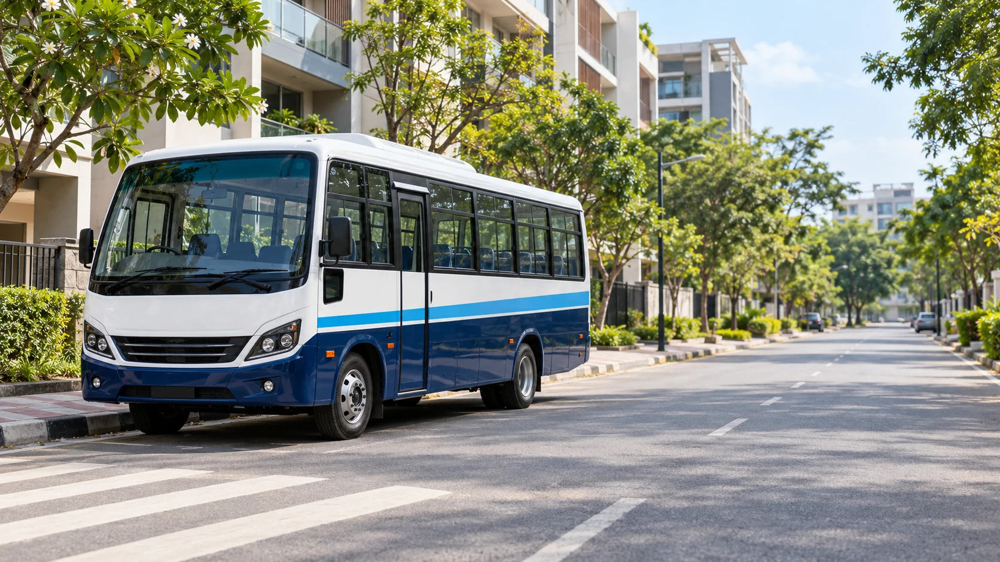
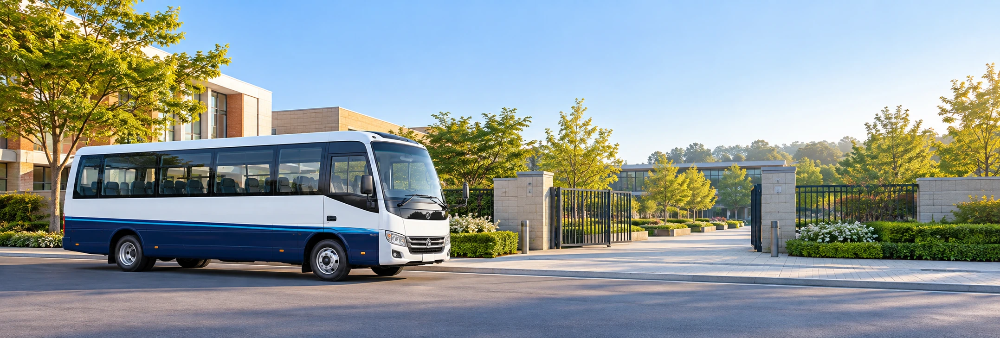

LR-010–5 km
Whitefield
Westbridge Public School
Palm Meadows→School
FIRST PICKUP7:20 am
SCHOOL ARRIVAL8:05 am

FIND YOUR EVERYDAY WAY
Search by neighbourhood, school or route number. Open a route to see every stop and its scheduled pickup time.
3 sample routes to explore
Westbridge Public School
Maple Grove Academy
Greenfield International
MORE THAN A LINE ON A MAP
A sensible pickup point and a predictable timetable can make all the difference to the school day.
Clearly named stops help you plan the walk from your doorstep.
Morning pickup and afternoon departure details stay easy to find.
The portal brings journey and attendance information together.
A familiar routine for meeting the bus and collecting your child.
KNOW WHAT COMES NEXT
Explore the stops and scheduled journey.
Check school timings and a suitable pickup.
Keep the route handy in the parent portal.
A FEW HELPFUL ANSWERS
Can’t find your area? Tell us where your school day begins.
Ask about coverageUse the contact form to prepare an enquiry with your area and school. These routes are examples; final coverage needs confirmation from a transport operator.
Listed times are planned schedules. Road and weather conditions can change the arrival time. A real tracking integration would provide updated estimates.
Changes should be agreed with the transport team and the school before travel. In this preview you can explore the planned stops only.
The route, school schedules and available seating would need to match. Add both children’s details when you discuss enrolment.

YOUR MORNING HAS A STARTING POINT
Share your school and neighbourhood to prepare a transport enquiry.
Ask about your routeYOUR NEIGHBOURHOOD → YOUR SCHOOL